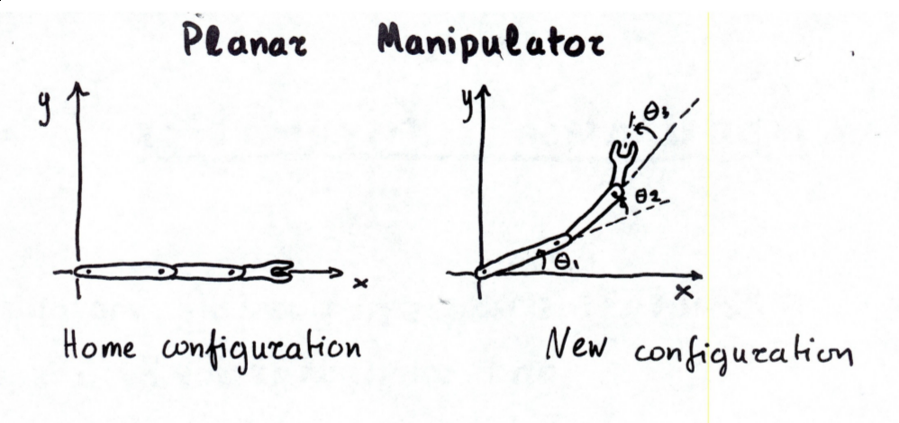

Kinematics
Here we look at the relationship between the configuration and workspaces of a system. There are two types of kinematics we're interested in:
- forward kinematics: postion of end effector given configuration point
- inverse kinematics: configuration point given position of end effector
import numpy as np
import matplotlib.pyplot as plt
%matplotlib widget
plt.rcParams["figure.figsize"] = 10, 6
plt.rcParams["figure.dpi"] = 150
plt.rcParams["text.usetex"] = True
from ipywidgets import interact, interactive, fixed, interact_manual
import ipywidgets as widgets
def get_rotation_matrix(angle):
rad = np.deg2rad(angle)
return np.array([[np.cos(rad), -np.sin(rad)], [np.sin(rad), np.cos(rad)]])
def get_pivot_matrix(angle, pt):
"""
Rotates {point} {angle} degrees around the point (x, 0).
"""
rot = np.zeros((3, 3))
rad = np.deg2rad(angle)
rot_matrix = get_rotation_matrix(angle)
rot[:2, :2] = rot_matrix
rot[:2, 2] = -(rot_matrix @ pt) + pt
return rot
Planar Manipulator

@interact(theta1=(0,45,5), theta2=(0,45,5), theta3=(0,45,5))
def plot_planar_manipulator(theta1=10, theta2=10, theta3=10):
"""
Plots a 3 arm planar manipulator.
"""
pt_color = "red"
arm_color = "black"
arms=[1, 1, 1]
points = [np.zeros(3)]
for arm in range(1, 4):
point = np.array([sum(arms[:arm]), 0 , 1])
for angle, pivotx in list(zip([theta1, theta2 / 2, theta3 / 3], [0, sum(arms[1:2]), sum(arms[:2])]))[:arm]:
point = get_pivot_matrix(angle, np.array([pivotx, 0])) @ point
plt.scatter(point[0], point[1], c=pt_color)
points.append(point)
plt.xlim((0, 3))
plt.ylim((0, 3))
for pt in range(3):
plt.plot([points[pt][0], points[(pt+1)][0]], [points[pt][1], points[(pt+1)][1]], c=arm_color)
interactive(children=(IntSlider(value=10, description='theta1', max=45, step=5), IntSlider(value=10, descripti…